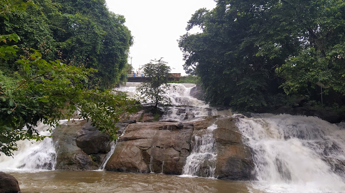
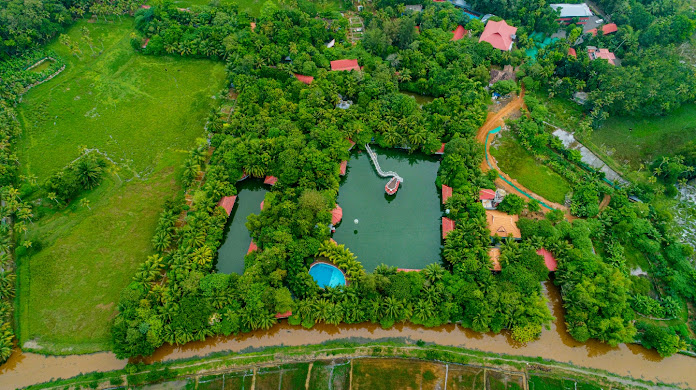

Kumarakam Bird Santuary
Kumarakom Bird Sanctuary is situated at Kumarakom in Kottayam taluk of Kottayam district in the Indian state of Kerala, on the banks of Vembanad Lake.

Aruvikuzhy Waterfalls
The whimsical Aruvikuzhy Waterfalls chattering down from a height of 100 feet is a real treat for the eyes.It is one of the beautiful waterfalls in kottayam district in kerala

Mango Meadows Agricultural Park
Mango Meadows is an agricultural theme park with more than 4800 species of plants, including 1900 species of medicinal plants, 700 species of trees.